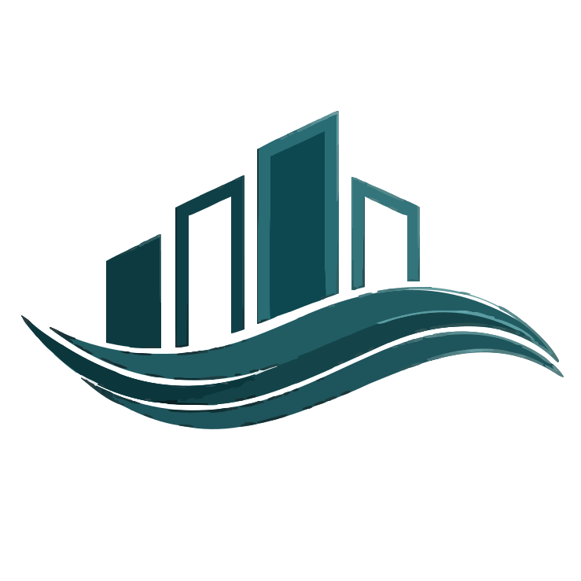

PRODUCT · FOUNDER & ENGINEER
Bunyan Flow
Property management.
With everything connected.
A bilingual platform for property owners and managers. Buildings, tenants, leases, payments, and reports—all in one place.
I build and operate it end to end, from data models and APIs to deployment and customer needs.
Visit Bunyan Flow
Bunyan Flowبنيان فلوPropertiesBuildings & units
People & agreementsTenants & lease contracts
Financial clarityPayments, expenses & reports
Arabic & EnglishOne connected workflow